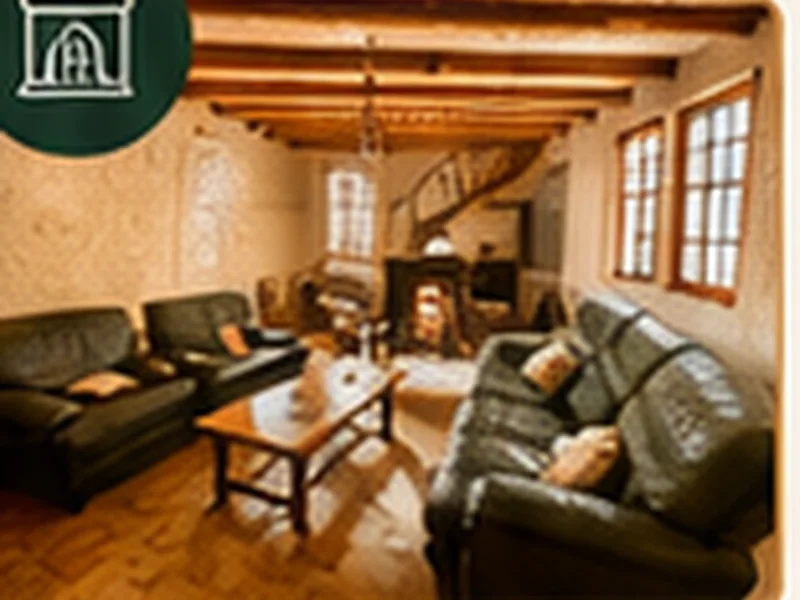
Salón con chimenea
Un espacio cálido para veladas en familia o con amigos.

Un chalet acogedor en Loudenvielle, idealmente situado para sus aventuras y momentos de descanso durante todo el año.
Le Chalet de Louron es su punto de partida para descubrir los tesoros de los Pirineos: senderismo, esquí, BTT, bienestar y gastronomía, todo muy cerca.
Descanse. Respire. Disfrute.
Ver el mapa interactivo ⌖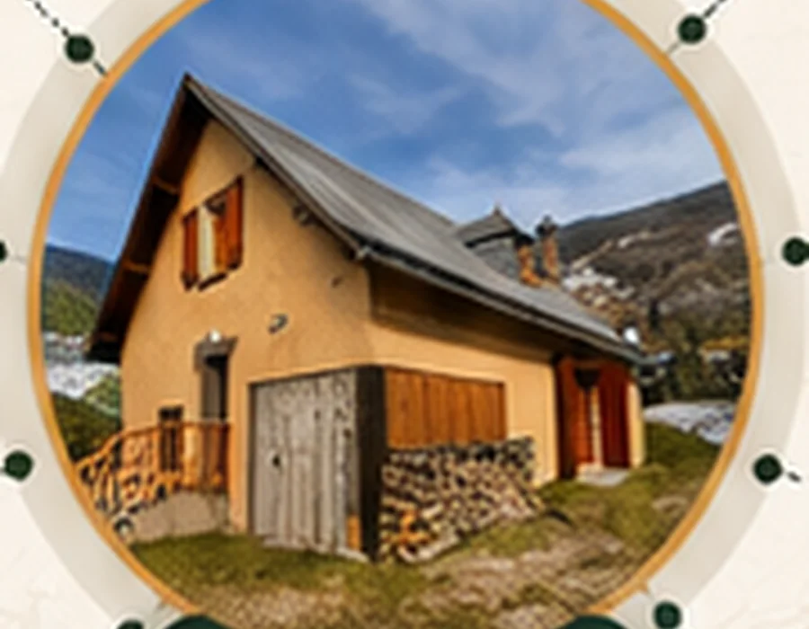
Visite cada estancia y visualice su estancia antes de reservar.
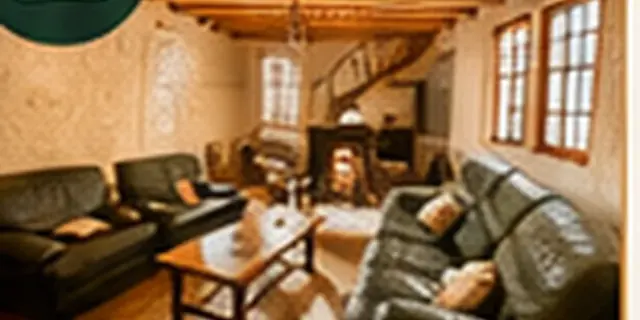
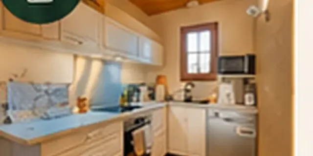
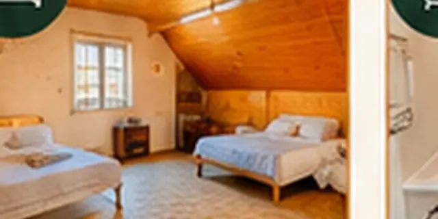
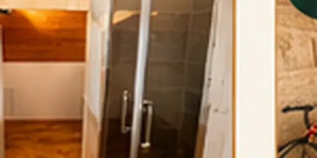
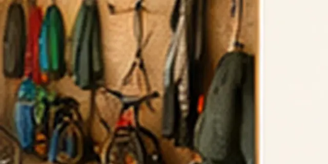

Un espacio cálido para veladas en familia o con amigos.
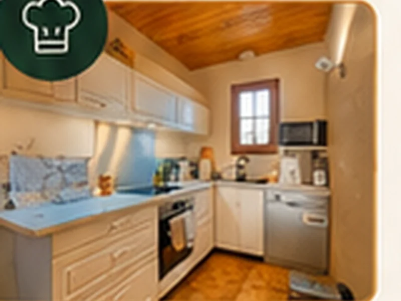
Todo lo necesario para cocinar como en casa.
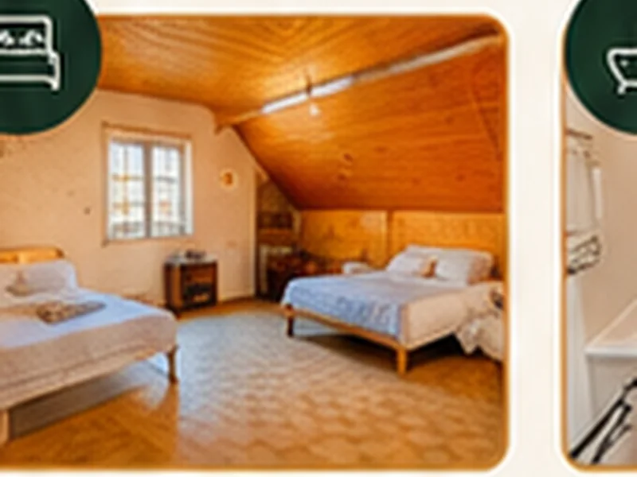
3 habitaciones acogedoras para noches reparadoras.
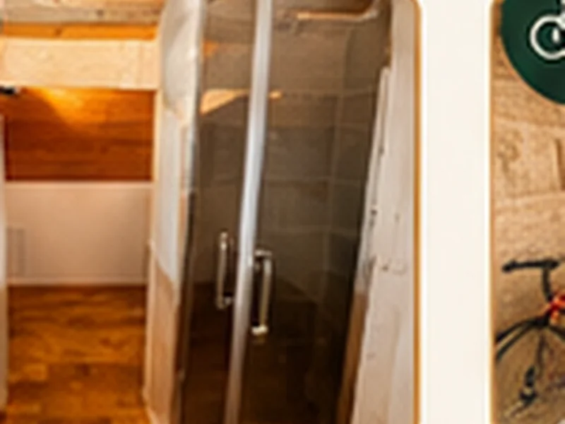
2 baños modernos para mayor comodidad.
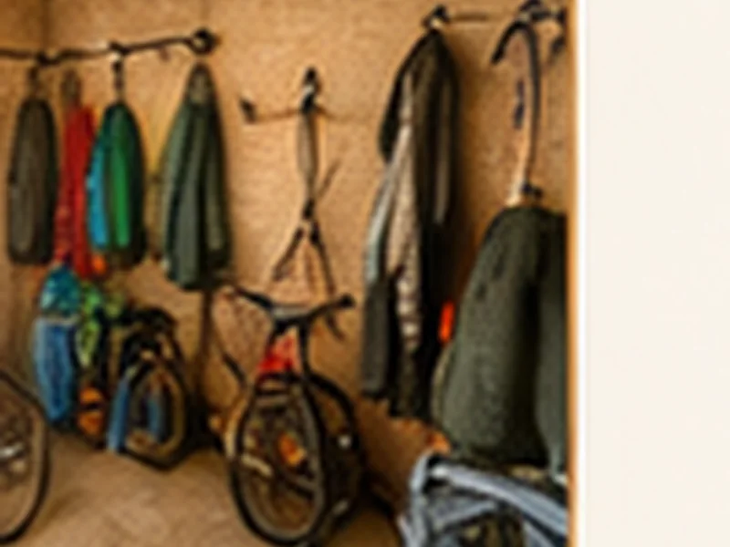
Espacio seguro para bicicletas y equipo de montaña.
Disfrute de la mejor tarifa disponible reservando directamente su estancia en Le Chalet de Louron.
Ubicación, ruta, tiempo y consejos prácticos para llegar tranquilo a Loudenvielle.
El chalet está situado en 13 Chemin de la Bayle, 65510 Loudenvielle, en el corazón del valle de Louron. Google Maps se carga solo a petición para preservar el rendimiento.
Prepare sus actividades según las condiciones actuales del valle.
--° / --°
En invierno, recuerde comprobar el equipamiento obligatorio de montaña antes de viajar.
Las tarifas varían según la temporada, la duración de la estancia y las opciones elegidas.
Tarifa dinámica según temporada y disponibilidad.
Forfait aplicado a la reserva.
Sábana bajera, funda nórdica y funda de almohada.
Kit completo cama doble.
Kit completo cama grande.
1 toalla + 1 toalla de baño.
No se aceptan animales para preservar la comodidad de todos los viajeros.
Sí, se puede aparcar delante del chalet. El terreno aún no está vallado.
La ropa de cama y las toallas son opcionales. También puede traer las suyas.
La llegada autónoma es posible mediante una caja de llaves. Las instrucciones se envían antes de la estancia.